# lets plot our root length against our shoot weight
x <- growth_data$FW_shoot_mg
y <- growth_data$Rootlength
plot(x, y)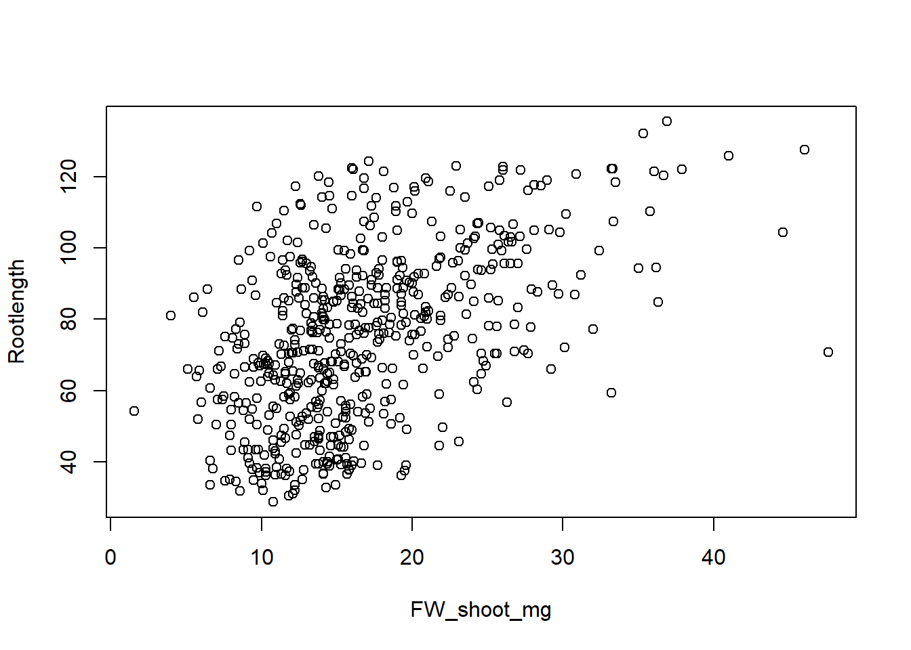
The examples below are part of base R, i.e. we can plot without using any packages. However, there are some nice packages that let you control a lot of parameters, which are good to learn for more sophisticates plots.
Plotting in base R is simple, we just need to define, what we plot against the x- and y-axis.
# lets plot our root length against our shoot weight
x <- growth_data$FW_shoot_mg
y <- growth_data$Rootlength
plot(x, y)
Plants with a missing root length or shoot weight are simply left out of the plot.
Now, lets add some more axis labels to make it more informative and lets start the plot at 0:
# lets plot our root length against our shoot weight
x <- growth_data$FW_shoot_mg
y <- growth_data$Rootlength
plot(x, y, xlab = "Shoot_weight_mg", ylab = "Rootlength_mm", ylim = c(0, 160), xlim = c(0, 50))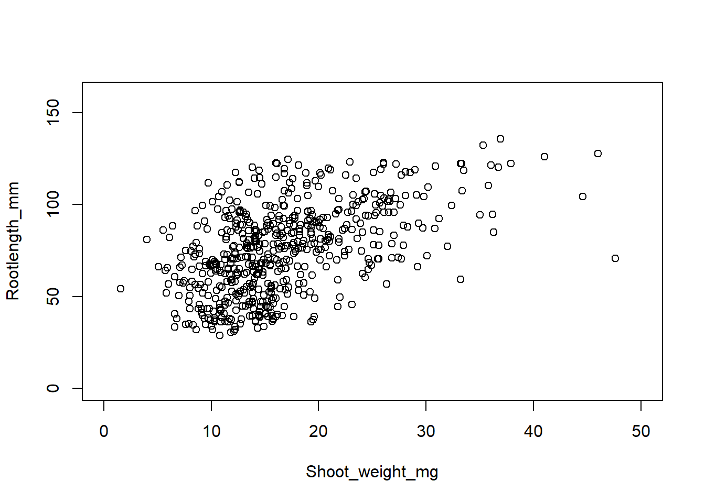
A useful thing to know is that you can add plots together, i.e. we can add a regression line:
#lets do the stats running a linear model (lm)
lm(growth_data$Rootlength ~ growth_data$FW_shoot_mg)
Call:
lm(formula = growth_data$Rootlength ~ growth_data$FW_shoot_mg)
Coefficients:
(Intercept) growth_data$FW_shoot_mg
45.471 1.782 Here, the intercept is 45.471 and the slope is 1.782.
# lets plot our root length against our shoot weight
x <- growth_data$FW_shoot_mg
y <- growth_data$Rootlength
#plot
plot(x, y, xlab = "Shoot_weight_mg", ylab = "Rootlength_mm", ylim = c(0, 160), xlim = c(0, 50))
#add the info from ln (both lines of code do the same thing)
abline(lm(growth_data$Rootlength ~ growth_data$FW_shoot_mg))We can even add the stats, but therefore we need to prepare the stats a bit better:
#to stats
modl = lm(growth_data$Rootlength ~ growth_data$FW_shoot_mg)
#get summary
modsum = summary(modl)
#get R2
r2 = modsum$adj.r.squared
#look at the coefficients
modsum$coefficients Estimate Std. Error t value Pr(>|t|)
(Intercept) 45.471292 2.2969633 19.79626 9.470283e-67
growth_data$FW_shoot_mg 1.781836 0.1278697 13.93478 3.480146e-38#get the p-value (its in the coefficient table, in the 2nd row and 4th column)
my.p = modsum$coefficients[2,4]Now we can plot this:
#add a label, in which we store the text we want to add
mylabel = bquote(italic(R)^2 == .(format(r2, digits = 3)))
#plot
plot(x, y, xlab = "Shoot_weight_mg", ylab = "Rootlength_mm", ylim = c(0, 160), xlim = c(0, 50))
#add the info from ln (both lines of code do the same thing)
abline(lm(growth_data$Rootlength ~ growth_data$FW_shoot_mg))
#add the text
text(x = 45, y = 150, labels = mylabel)If we want to add the other value, it gets a bit more complicated esp. if we want to have first the R2 and then, in a new line, the p-value.
For this, lets first prepare a new label
#make an empty vecotr
rp = vector('expression',2)
rpexpression(NULL, NULL)#add our two values into the vector
rp[1] = substitute(expression(italic(R)^2 == MYVALUE),
list(MYVALUE = format(r2,dig=3)))[2]
rp[2] = substitute(expression(italic(p) == MYOTHERVALUE),
list(MYOTHERVALUE = format(my.p, digits = 2)))[2]
rpexpression(italic(R)^2 == "0.253", italic(p) == "3.5e-38")Lets plot this:
#plot
plot(x, y, xlab = "Shoot_weight_mg", ylab = "Rootlength_mm", ylim = c(0, 160), xlim = c(0, 50))
#add the info from ln (both lines of code do the same thing)
abline(lm(growth_data$Rootlength ~ growth_data$FW_shoot_mg))
#add the text as a legend and remove the border with bty
legend("topright", legend = rp, bty = 'n')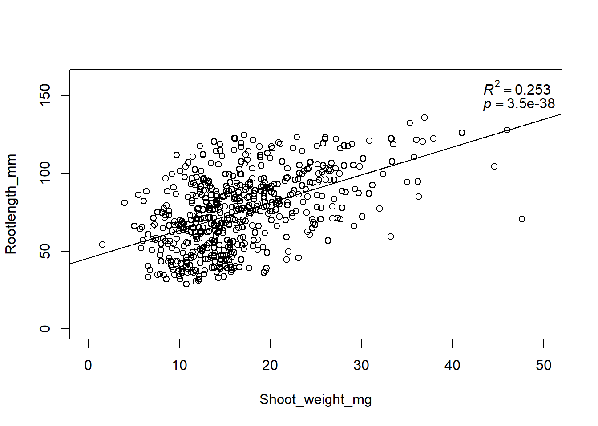
Now, lets work with our time course data to draw some line plots. I.e. lineplots are ideal if we have measurements over time.
Lets first summarize our time course data to make it easier to plot.
library(dplyr)
Attaching package: 'dplyr'The following objects are masked from 'package:plyr':
arrange, count, desc, failwith, id, mutate, rename, summarise,
summarizeThe following object is masked from 'package:kableExtra':
group_rowsThe following objects are masked from 'package:stats':
filter, lagThe following objects are masked from 'package:base':
intersect, setdiff, setequal, union#first filter to only keep the low_P data, then summarize the data by condition and timepoint and calculate the mean
timecourse_summary <- timecourse %>%
filter(Nutrient == "low_P") %>%
group_by(Condition, Timepoint) %>%
summarise(mean_root = mean(Rootlength), .groups = 'drop')
head(timecourse_summary)#split the data into our two categories
timecourse_summary_Control <- timecourse_summary[timecourse_summary$Condition == 'mock',]
timecourse_summary_129E <- timecourse_summary[timecourse_summary$Condition == '129E',]Useful comments:
x <- timecourse_summary_Control$Timepoint
y <- timecourse_summary_Control$mean_root
plot(x, y, type = "b", pch = 19, xlab = "Days after transfer", ylab = "Rootlength (mm)", col = "#7700BB", main = "Growth measurements")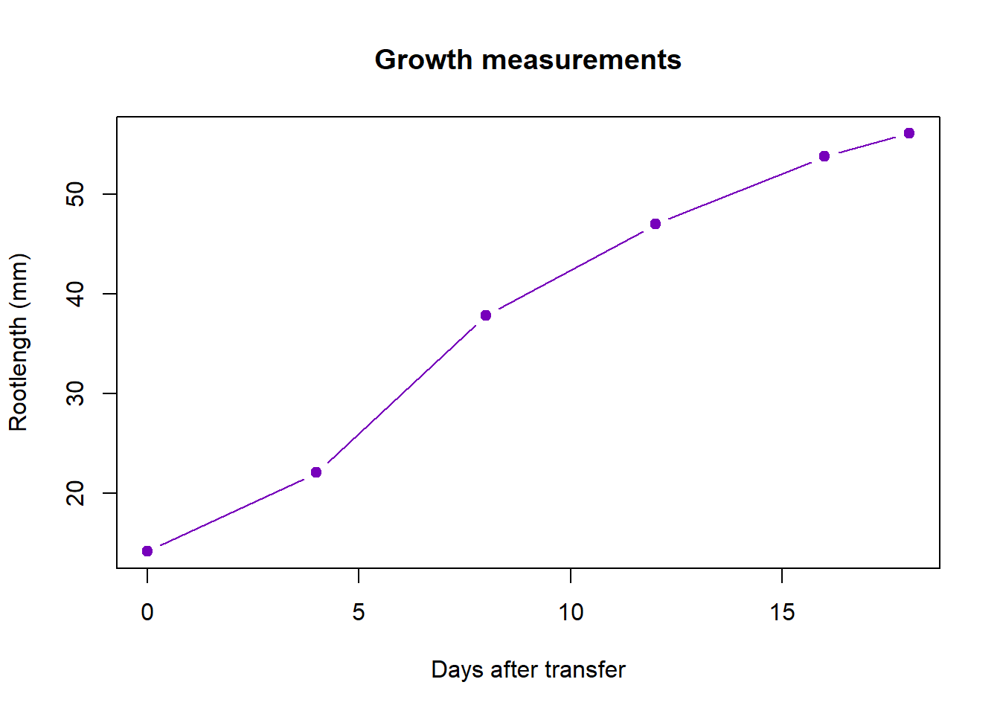
plot() always overwrites the content for the current graphics window.
To add elements to an existing plot, one can use points, lines, abline, text, … We can also add a legend to the plot.
In the previous graph eith out growth measurements let us add the root growth of our microbe treatment.
x <- timecourse_summary_Control$Timepoint
y <- timecourse_summary_Control$mean_root
z <- timecourse_summary_129E$mean_root
plot(x, y, type = "b", pch = 19, xlab = "Days after transfer", ylab = "Rootlength (mm)",col = "#7700BB", ylim = c(0, 90), main = "Growth measurements")
lines(x, z, type = "b", col = "#5555DD")
legend("topleft", c("control", "microbe"), col = c("#7700BB", "#5555DD"),pch = c(19, 1))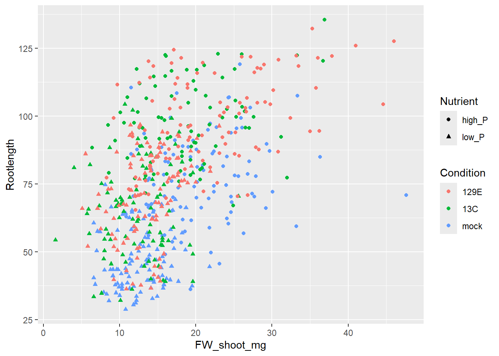
We can see nicely, that our roots grow longer past the 3rd timepoint.
To change graphical parameters globally you can use par. R allows for n × m figures in a single page, by adjusting the parameter mfrow:
par(mai = c(1.02, 0.82, 0.82, 0.42)).par(mfrow = c(n, m)) # n: number of figures in rows, m: ... in columns.
plot(x1, y1)
plot(x1, y2)
...
plot(xn, ym)
#save a file
png("output_examples/filename.png")
plot(x, y)
dev.off()In the above code chunk, you first open a png file, then plot directly to that file, and finally explicitly close the plotting device with dev.off(). Thus, you do not see the plot on the graphics window. The Cairo package is supposed to be superior to these basic plotting functions, but it does not come with the base installation of R, therefore you will have to install it to try it out (if you are interested, or at a later time).
Now lets generate a png file plot.png containing three plots in three different rows.
x <- timecourse_summary_Control$Timepoint
control <- timecourse_summary_Control$mean_root
Microbe <- timecourse_summary_129E$mean_root
#define what we want to print
png("output_examples/filename2.png", width = 240, height = 480)
#define how we want to order our 3 plots into rows and columns
par(mfrow = c(3, 1))
#build plot1
plot(x, control, type = "b", pch = 19, xlab = "Days after transfer", ylab = "Rootlength (mm)",col = "#7700BB", main = "Growth measurements")
#build plot2
plot(x, Microbe, type = "b", pch = 19, xlab = "Days after transfer", ylab = "Rootlength (mm)",col = "#5555DD", main = "Growth measurements")
#build plot3
plot(x, control, type = "b", pch = 19, xlab = "Days after transfer", ylab = "Rootlength (mm)",col = "#7700BB", ylim = c(0, 90), main = "Growth measurements")
lines(x, Microbe, type = "b", col = "#5555DD")
legend("topleft", c("control", "microbe"), col = c("#7700BB", "#5555DD"),pch = c(19, 1))
#closes the specified plot
dev.off()A histogram shows the frequency of data values in equally sized intervals. Density plots are an alternative, but because of the smoothing between data points, histograms provide a more ‘natural’ look at your data. If you are interested in how to make a density plot, look at the help page of density.
As an example, lets plot the distribution of our root length measurements across our data.
hist(growth_data[, "Rootlength"], cex = 0.6, main = "Data distribution", breaks = 10, density = 100, col = "lightblue", border = "darkblue", xlab = "Rootlength (mm)", labels = TRUE)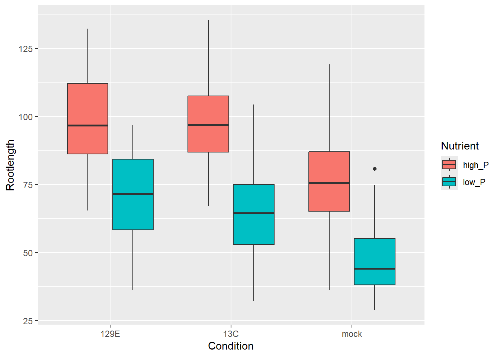
Boxplots represent a compact summary of a data vector in graphical form.
As we’ve already seen above, the function summary returns summary statistics on the command line: the minimum, first quartile, mean, median, third quartile and the maximum.
The boxplot displays these values graphically (except the mean) as follows:
We will first make a boxplot of all measurements and then check for differences between the two nutrient conditions.. Play around with the parameters and add colors and labels.
# all data
boxplot(growth_data$Rootlength, cex = 0.8, ylab = "Root length (mm)")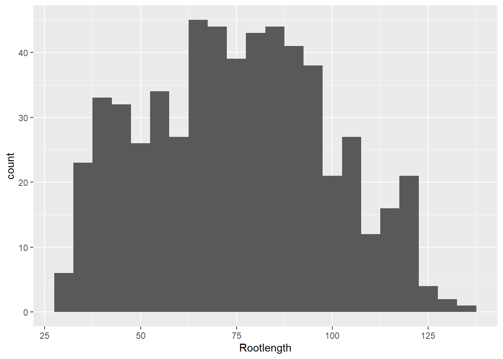
# data by nutrient condition
boxplot(growth_data$Rootlength ~ growth_data$Nutrient, las = 2, cex = 0.8, ylab = "Root length (mm)")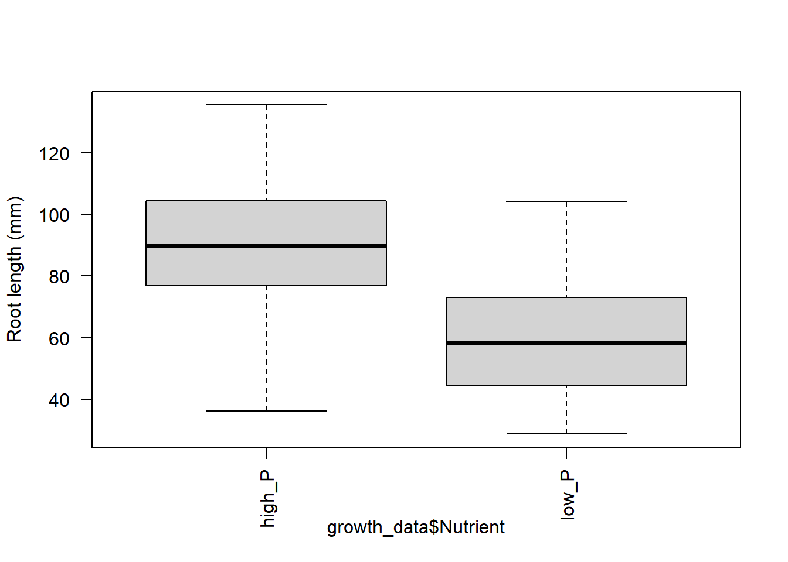
# data by nutrient and growth condition
boxplot(growth_data$Rootlength ~ growth_data$Nutrient * growth_data$Condition, las = 2, cex = 0.8, ylab = "Root length (mm)")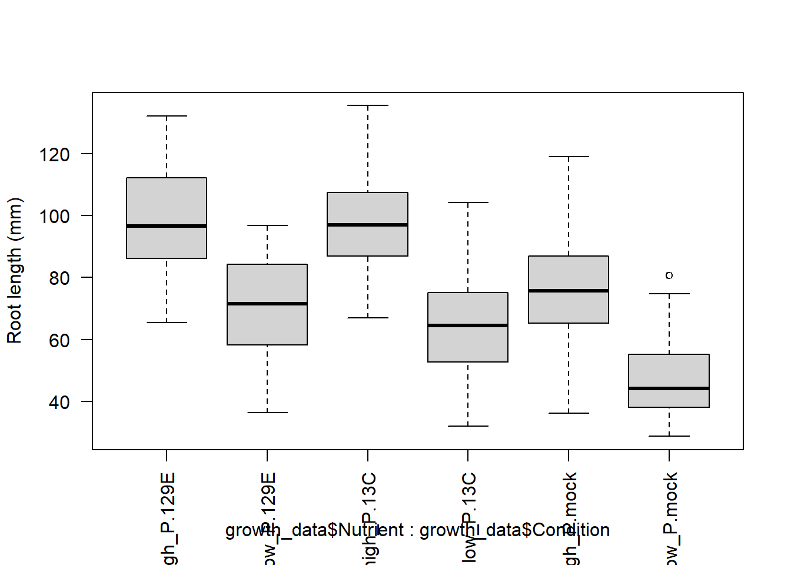
Gplot2 is a system for declaratively creating graphics, based on The Grammar of Graphics. You provide the data, tell ggplot2 how to map variables to aesthetics, what graphical primitives to use, and it takes care of the details.
Detailed info can be found here: https://ggplot2.tidyverse.org
One important difference to basic plots is that argument can be given in separate blocks that are separated by a +
ggplot2 also leaves out missing values, but in contrast to base R it tells you about it with a warning that starts with “Removed 15 rows containing …”. 15 is the number of plants without a root length. This is not an error: the plot is still made, R just wants you to know that some plants are not shown.
library(ggplot2)Warning: package 'ggplot2' was built under R version 4.4.3#make a bargraph
myplot <-
ggplot(growth_data, aes(x =Nutrient, y = Rootlength)) + #here we provide the dimensions of our plot
geom_bar(stat="identity") #here, we say what kind of plot we want
myplotWarning: Removed 15 rows containing missing values or values outside the scale range
(`geom_bar()`).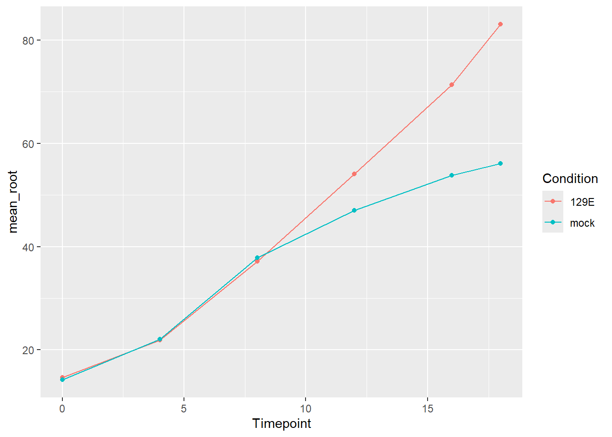
We see that the default behavior is to sum everything, which is not what we want. Luckily switching different graph types is very quick
#make a boxplot instead of bargrpah
myplot <-
ggplot(growth_data, aes(x =Nutrient, y = Rootlength)) +
geom_boxplot()
myplotWarning: Removed 15 rows containing non-finite outside the scale range
(`stat_boxplot()`).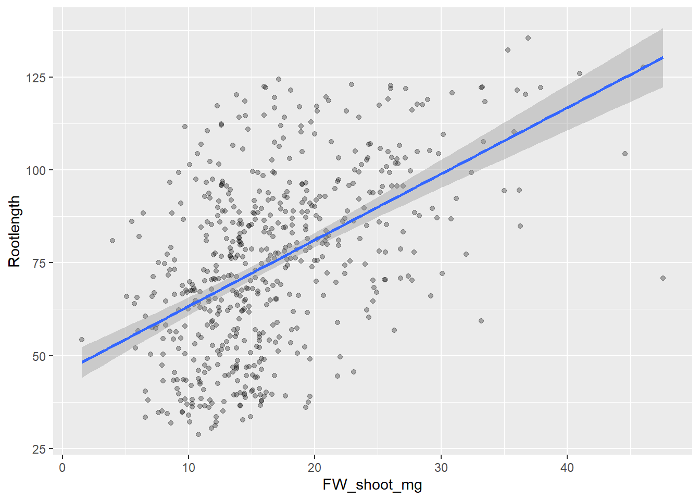
#do a histogram
myplot <-
ggplot(growth_data, aes(Rootlength)) +
geom_histogram()
myplot`stat_bin()` using `bins = 30`. Pick better value `binwidth`.Warning: Removed 15 rows containing non-finite outside the scale range
(`stat_bin()`).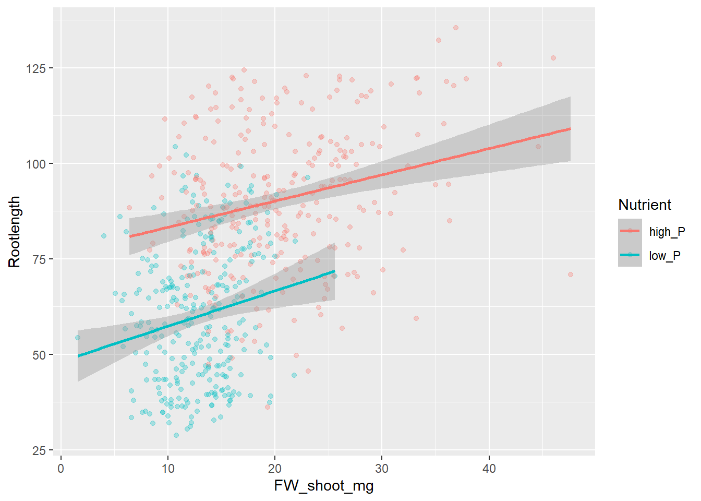
The only thing we might want to watch out for is that depending on what data we plot the astethics might need to be adopted. I.e. for a histogram there is no need to provide a x and y value, but we only need to define for what data we want to plot a histogram.
Another useful feature is to add colors by groupings, i.e. nutrient conditions, using the fill option.
myplot <-
ggplot(growth_data, aes(x =Nutrient, y = Rootlength, fill = Nutrient)) +
geom_boxplot()
myplotWarning: Removed 15 rows containing non-finite outside the scale range
(`stat_boxplot()`).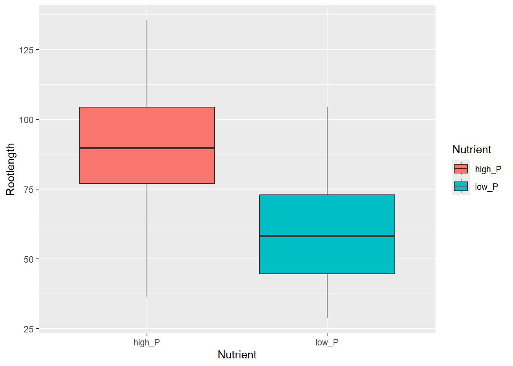
By default the basic design of a ggplot2 is not ready for publication but we can control every aspects to make it look nicer. A cheat sheet for all the options can be found here
myplot <-
ggplot(growth_data, aes(x =Nutrient, y = Rootlength, fill = Nutrient)) +
geom_boxplot() +
scale_fill_manual(values=c("black", "grey")) + #add some other colors
scale_y_continuous(expand = c(0, 0), limits = c(0, 160)) + #make the axis start at 0
theme_bw() + #remove the grey background
ylab("Root length (mm)") + #change the label for the y-axis
xlab("") + #remove the label for the x axis
theme(panel.grid.major = element_blank(), panel.grid.minor = element_blank(), #modify the grid lines
panel.background = element_blank(), axis.line = element_line(colour = "black")) +
theme(legend.position="right", #move the legend around
axis.text.x=element_text(angle=45,hjust = 1, size=12)) #control size and orientation of the axis labels
myplotWarning: Removed 15 rows containing non-finite outside the scale range
(`stat_boxplot()`).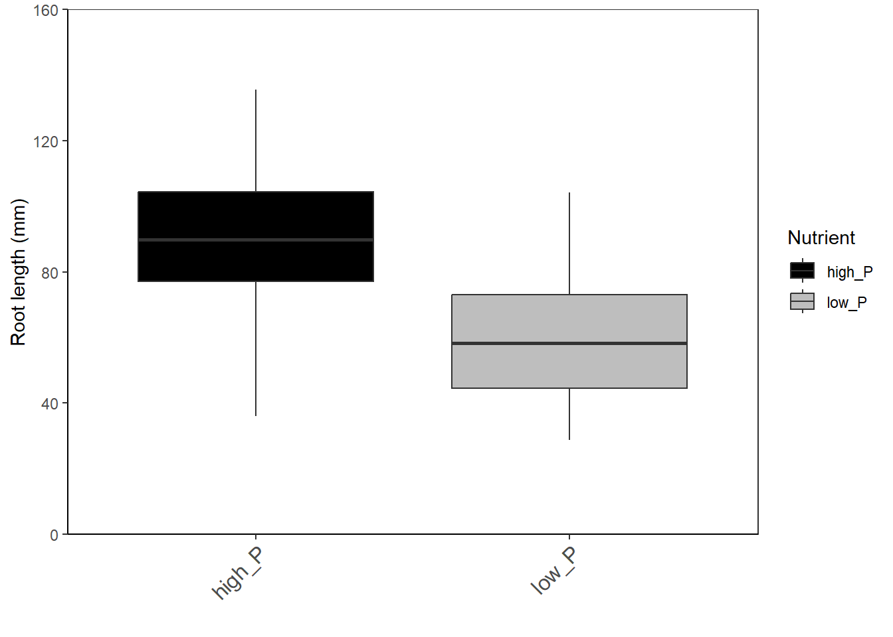
By default most programs sort alpha in an alphabetical way. We can reorder this using vectors (which we can write ourselves or use a mapping file to create them)
#reorder the nutrient levels in our factors
growth_data$Nutrient2 <- factor(growth_data$Nutrient, levels = c("low_P", "high_P"))
#plot in our new order
myplot <-
ggplot(growth_data, aes(x =Nutrient2, y = Rootlength, fill = Nutrient)) +
geom_boxplot()
myplotWarning: Removed 15 rows containing non-finite outside the scale range
(`stat_boxplot()`).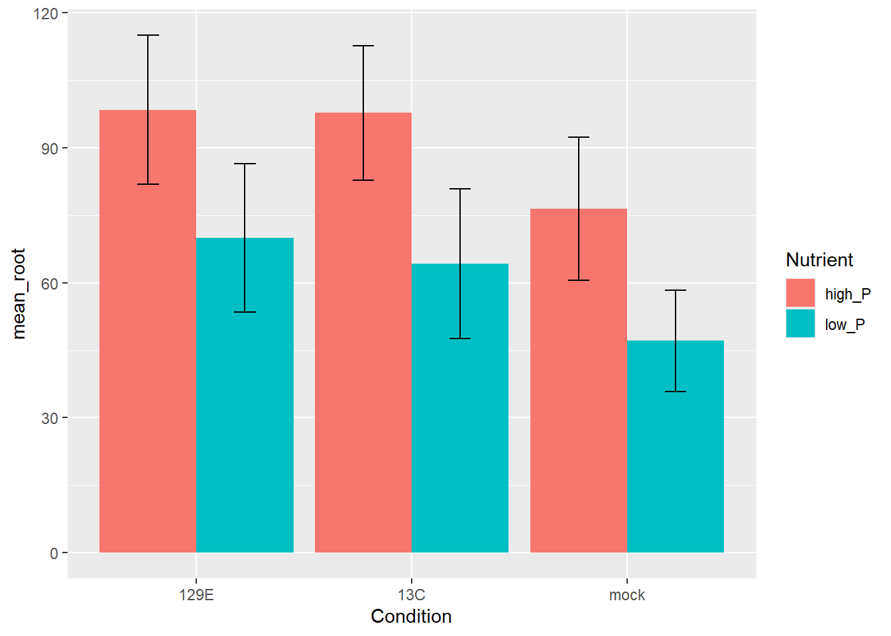
With pdf() we tell R that we want to print something to our computer. Inside the function we can define the name of the pdf to generate, the size and other things. After adding the plot we want to print it is important to run dev.off() in order to tell R to stop the “printing mode” and go back to the default mode.
#lets first generate two plots
myplot_root <-
ggplot(growth_data, aes(x =Nutrient2, y = Rootlength, fill = Nutrient)) +
geom_boxplot()
myplot_shoot <-
ggplot(growth_data, aes(x =Nutrient2, y = FW_shoot_mg, fill = Nutrient)) +
geom_boxplot()
#plot one graph
pdf("output_examples/Plot_root_length.pdf", width=3, height=3, family = "Times")
myplot_rootWarning: Removed 15 rows containing non-finite outside the scale range
(`stat_boxplot()`).dev.off()png
2 The ggpubr package is nice to combine multiple plots onto one plot. Some more information on this package can be found here
How it works:
#load package
library(ggpubr)Warning: package 'ggpubr' was built under R version 4.4.3
Attaching package: 'ggpubr'The following object is masked from 'package:plyr':
mutate#view how ggarrange deals with two plots
ggarrange(myplot_root, myplot_shoot,
labels = c("A", "B"),
ncol = 2, nrow = 1)Warning: Removed 15 rows containing non-finite outside the scale range
(`stat_boxplot()`).Warning: Removed 8 rows containing non-finite outside the scale range
(`stat_boxplot()`).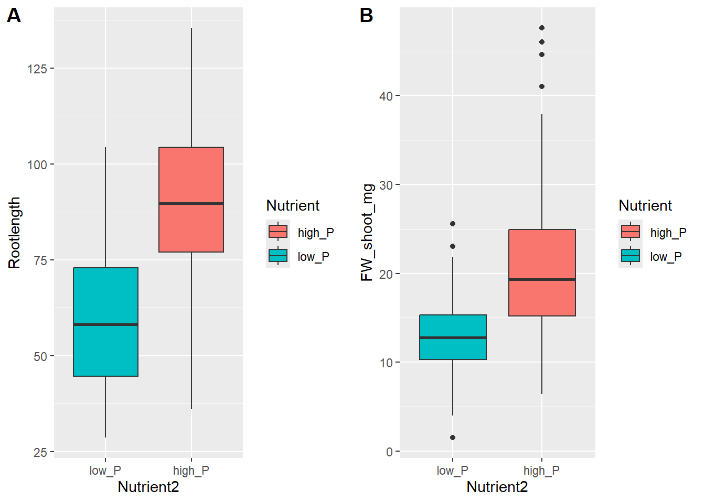
#we can also plot two graphs and print them in one pdf
pdf("output_examples/Two_plots.pdf", width=3, height=3, family = "Times")
ggarrange(myplot_root, myplot_shoot,
labels = c("A", "B"),
ncol = 2, nrow = 1)Warning: Removed 15 rows containing non-finite outside the scale range
(`stat_boxplot()`).Warning: Removed 8 rows containing non-finite outside the scale range
(`stat_boxplot()`).dev.off()png
2 If we have multiple conditions, i.e. nutrient conditions and other treatments there are several ways to plot these
For this, we need one column that names each combination of nutrient and condition. paste() glues the values of two columns together, and sep = "_" puts an underscore between them:
#make a column with the combination of nutrient and condition, i.e. low_P_129E
growth_data$SampleID <- paste(growth_data$Nutrient, growth_data$Condition, sep = "_")
head(growth_data)#pdf("Plot_root_length.pdf", width=3, height=3, family = "Times")
ggplot(growth_data, aes(x =SampleID, y = Rootlength, fill = Nutrient)) +
geom_boxplot()Warning: Removed 15 rows containing non-finite outside the scale range
(`stat_boxplot()`).#dev.off()Now, here the order is not nice, but as mentioned we can use mapping files to sort our data. Lets try.
#make a mapping file that lists each combination only once
mapping_file <- unique(growth_data[, c("SampleID", "Nutrient", "Condition")])
#lets check how our mapping file looks like
mapping_fileWe can use this simpler table to define how we want to resort our growth data. First, lets reorder the metadata first by nutrient and then by condition. order() gives the row numbers in the order in which the rows should be sorted, first by the first column we give it and then by the second:
#lets sort the file first by nutrient and then by condition
mapping_file <- mapping_file[order(mapping_file$Nutrient, mapping_file$Condition), ]
#check whether we like how things are ordered
mapping_file$SampleID[1] "high_P_129E" "high_P_13C" "high_P_mock" "low_P_129E" "low_P_13C"
[6] "low_P_mock" Now, we can use the order of this file to re-order our larger dataframe with the growth data.
#reorder the levels of our growth data using the mapping file
growth_data$SampleID2 <- factor(growth_data$SampleID, levels = as.character(mapping_file$SampleID))
head(growth_data)#plot (for now lets do this side by side)
ggplot(growth_data, aes(x =SampleID2, y = Rootlength, fill = Nutrient)) +
geom_boxplot()Warning: Removed 15 rows containing non-finite outside the scale range
(`stat_boxplot()`).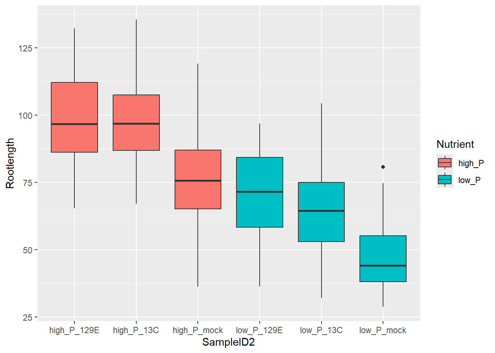
For bargraphs we can also make them nice looking with errorbars, however, the values for the mean, sd and so one ideally should be listed in a summary table.
Luckily we have learned before how we can use ddply to create such a table again and then blot it:
#summarize
growth_data_summarized <- ddply(growth_data, .(SampleID, Nutrient), summarize, RootLength = mean(Rootlength, na.rm = TRUE), sd = sd(Rootlength, na.rm = TRUE), se = sd(Rootlength, na.rm = TRUE) / sqrt(sum(!is.na(Rootlength))))
#order levels
growth_data_summarized$SampleID2 <- factor(growth_data_summarized$SampleID, levels = as.character(mapping_file$SampleID))
#plot
ggplot(growth_data_summarized, aes(x=SampleID2, y=RootLength, fill=Nutrient)) +
geom_bar(stat="identity", color="black",
position=position_dodge()) +
geom_errorbar(aes(ymin=RootLength-sd, ymax=RootLength+sd), width=.2,
position=position_dodge(.9))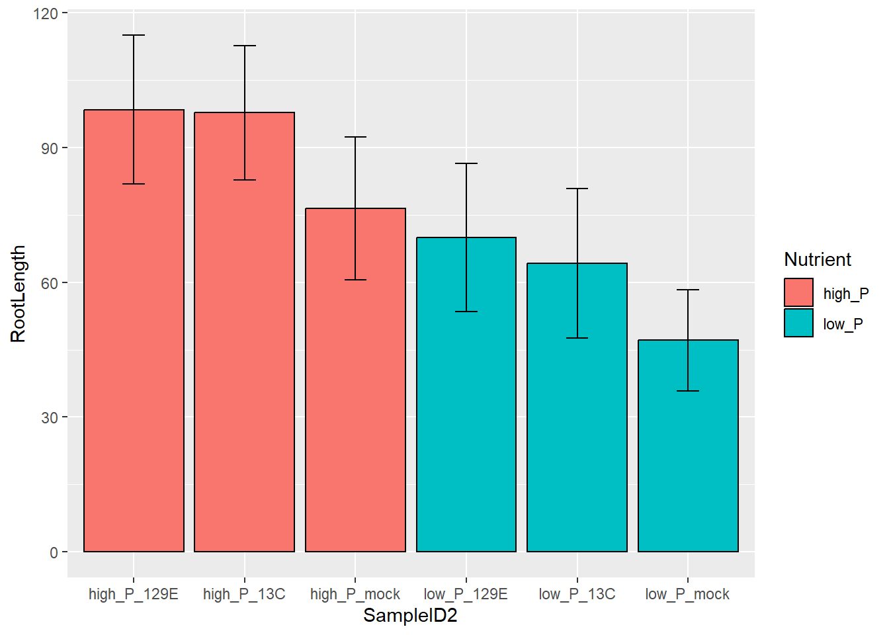
Sometimes, we might to plot data into separate plots. This can be done in ggplot with one extra command. Facetting can do this for you.
Options: - Scales “free” tells ggplot that the scales can be different between plots. I.e. axis height. - ncol = allows to control the dimensions of the plot
#plot horizontal
ggplot(growth_data, aes(x =SampleID2, y = Rootlength, fill = Nutrient)) +
geom_boxplot() +
facet_wrap(. ~ Nutrient, scales = "free", ncol = 2)Warning: Removed 15 rows containing non-finite outside the scale range
(`stat_boxplot()`).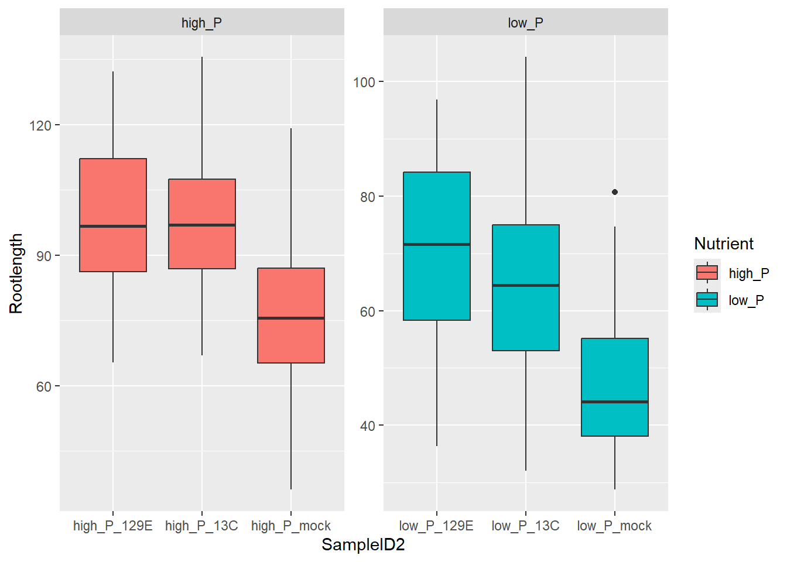